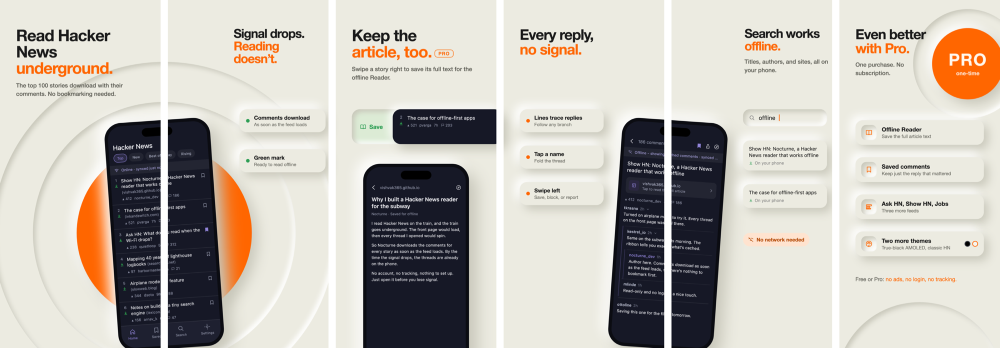
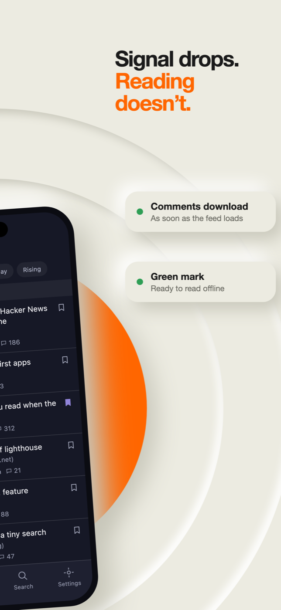
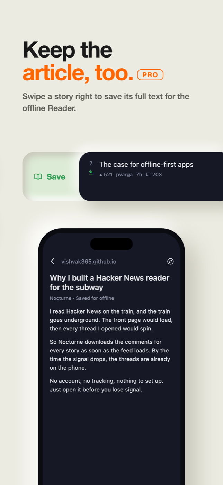
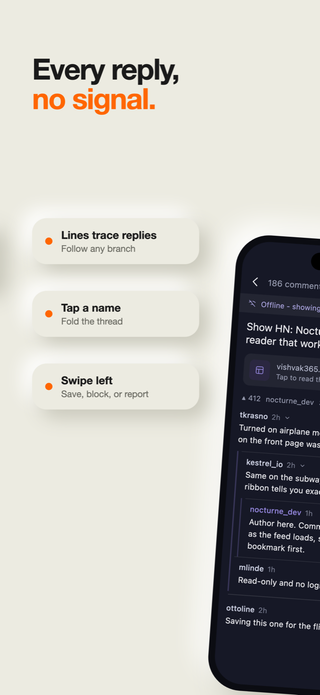
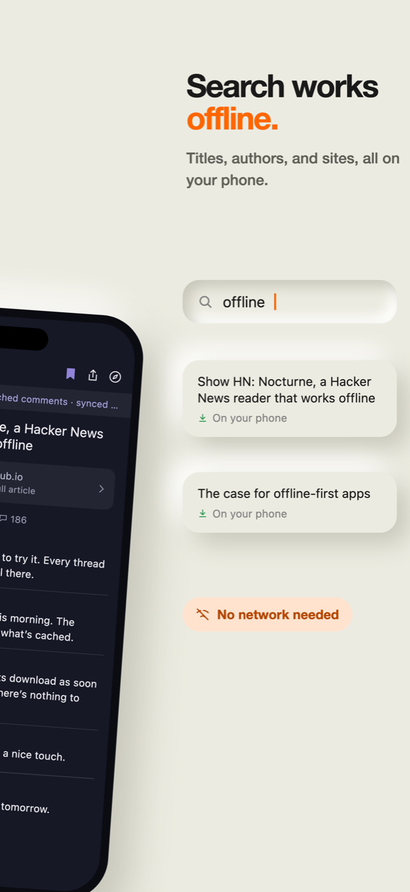
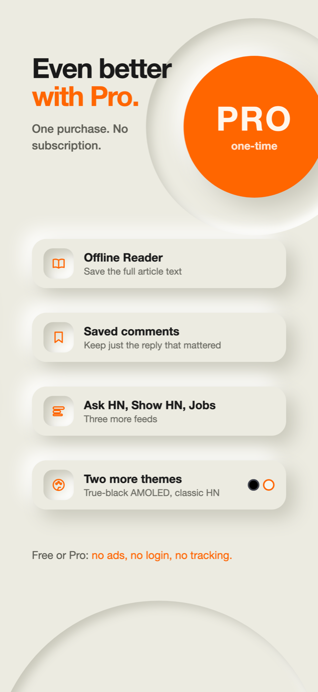

Hacker News, offline‑first
Every story on the front page downloads its comments automatically in the background, so the subway, a flight, or a dead zone doesn't turn the app into an empty screen.

What’s new in 1.1
- A welcome tour on first launch: short animated demos of the front page, offline mode, threads, and Pro, each with a “now you try” step on made-up posts. Replay it anytime from Settings → About.
- Feed chips on Home — every feed is one tap under the title, replacing the old sort menu.
- Comment gestures — swipe a comment right to save it, left for its actions (save, block, report). Long-press works anywhere on the comment.
- Clearer threads — connected line guides trace every reply back to its parent. Tap a name to fold a branch.
- Share a story’s Hacker News discussion from the comments screen.
- Faster comments — threads load in one request instead of hundreds, and what’s on screen always loads first.
- Subtle haptics for tabs, toggles, and swipes (on by default, switch off in Settings), and a new compass icon for “Open in browser”.
What it does
- Ranked home feed — Top, New, Best of Today, and a client-side “Rising” sort, pulled live from the official HN Firebase API.
- Every story auto-downloads its comments, right after the feed loads — not just the ones you bookmark. A small mark under each rank shows its state: queued, downloading, or green for readable offline.
- Bookmarking a story keeps its thread current on every future visit and protects it from ever going stale.
- Opening a story never disturbs what’s on screen — a cached copy shows immediately while a fetch runs quietly behind it.
- Truncated threads are recoverable — tap a “load more” notice to fetch exactly those replies, in place.
- Search works offline — titles, authors, and sites across everything on your phone.
- Offline is a first-class state, not an error — losing connectivity shows the last feed you had, muted and tagged, rather than a blank screen.
Free & Pro
Nocturne is free, with a single $1.99 one‑time unlock. No subscription — there's no recurring server cost behind this app to justify one. Nothing that works today moves behind the paywall; the paid tier only adds capability.
| Free | Pro | |
|---|---|---|
| Feeds | Top, New, Best of Today, Rising | + Ask HN, Show HN, Jobs |
| Auto-downloaded comments | full depth, every front-page story | same |
| Saved threads | unlimited | same |
| Saved comments | — | save an individual comment (swipe it right, or long-press), not just its whole thread |
| Offline article reading | — | full article text — swipe a Home row, tap Reader, or turn on "Reader by default" |
| Appearance | Nocturne dark, font scaling | + AMOLED black, Hacker News (light) |

Comments download as soon as the feed loads. A green mark means it’s ready offline.

Swipe a story right to keep its full article for the offline Reader. PRO

Line guides trace every reply. Swipe a comment to save, block, or report.

Search titles, authors, and sites with no network at all.

One purchase unlocks Pro: Reader, saved comments, three more feeds, two more themes.
Privacy, in one paragraph
Nocturne reads the public, read-only Hacker News and HN Search (Algolia) APIs, plus the articles you choose to open, and nothing else — no accounts, no login, no analytics, no crash reporting, no third-party SDKs. Every cache is a plain file on your device. The one exception is the Pro unlock itself, which goes through Apple's own StoreKit and never touches a server Nocturne controls. Full details on the Privacy Policy page.